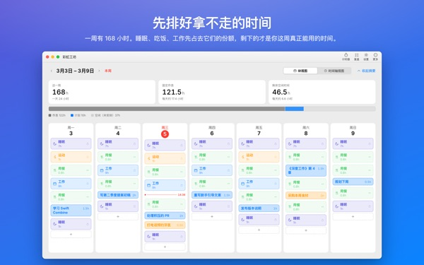
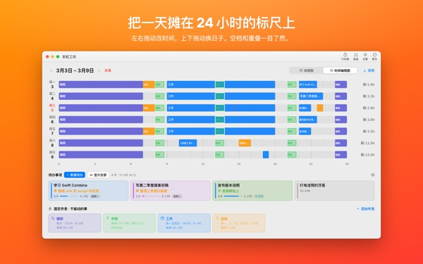
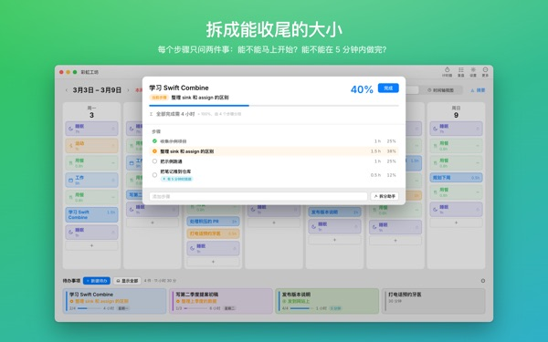
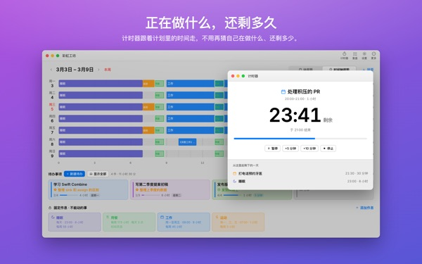
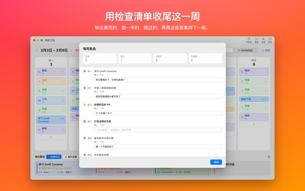

这一周，
真的排得下吗？
彩虹工坊是一款按星期和时段铺开一周的 Mac 应用。先放下睡眠、用餐、工作这些省不掉的时间，再把待办拖到剩下的空位里，亲眼看清哪些装得下。
计划、作息、待办、复盘、计时器和日历导入均可免费使用。

在这里排一周试试
我们先放好了应用首次打开时建议的四项作息。试着开关作息，再把待办放到某一天。
待办越列越长，一周却总是不够用？
光看清单，看不出这周能不能全部做完。减去睡眠、吃饭和通勤早已占走的时间，剩下的往往比想象中少。彩虹工坊用数字和格子把剩下的时间摆在眼前，让你把每件待办放到真实的位置上试一试。
在 24 小时刻度上看一天
时间轴视图把一天铺在 24 小时刻度上，空档和重叠一目了然，重叠的日程怎么摆也由你决定。
Mac 日历里的会议和约会直接导入，不用再写一遍。需要的话，还能把计划写进应用单独创建的彩虹工坊日历，在 iPhone 日历里也能看到。其他日历一概不改。

拆成能收尾的大小
大任务卡住，往往是因为还有什么东西挡着。应用会对每一步问两个问题：能不能不做准备就开始？能不能在 5 分钟内做完？
两个都是，就是一块“碎片”，每空出 5 分钟就能拿来做。其余的需要专门留出时间。应用判断错了，改过来就行。

正在做什么，还剩多久
到了开始时间，计划会变成进行中；时间一过，会问你做完没有。计时器跟着时间表走。
当前计时小组件不用打开应用，就能显示正在做的事和剩余时间。

用一张清单收尾一周
每周复盘是每天一张卡片。标出做完、做了一半、跳过，再拿这些答案去排下一周。
同一个 iCloud 账户下，待办会在本应用和 iPhone 应用 Rainbow of Desire 之间同步，在 Mac 上排好的今天，出门也能查看。

三步开始
- 1
先定下省不掉的时间
把睡眠、用餐、工作这类每周都有的时间设成作息。应用不会替你预先填任何东西。
- 2
写下待办
在屏幕下方的待办事项里一行写一件。什么时候做，现在还不用决定。
- 3
拖到某一天
放到哪天，就成了那天的计划。日子变了，再拖到别的日子或拖回列表即可。
按建议的作息算一算
- 一周
- 168 小时
- 睡眠 · 每天 8 小时
- 56 小时
- 用餐 · 每天三次
- 17.5 小时
- 工作 · 学校 · 工作日 9 小时
- 45 小时
- 运动 · 周一、三、五 1 小时
- 3 小时
- 这周真正能用的时间
- 46.5 小时
这些只是示例。作息按自己的生活来选、来改。休假或出差不上班的那天，单独去掉就好。
过好这一周需要的，全都免费
免费
- 周计划和日计划、作息、待办（不限数量）
- 时间轴视图和步骤拆分
- 每周复盘，并可复制为文字
- 计时器和当前计时小组件
- 从日历导入
- 与 iPhone 上的 Rainbow of Desire 同步
- 最近 2 周的复盘趋势
Plus · Pro
- Plus：8 周复盘趋势，看出状态好的日子和时段
- Plus：计划与实际用时对比
- Plus：把顺利的一周计划一次铺到本周
- Pro：包含 Plus 全部内容，并可用只读链接分享我的日程
- Pro：买一次，iPhone 应用也一起解锁 Pro
每档都可选年度订阅或一次买断终身使用
价格请在应用内或 App Store 查看。年度订阅如未在当期结束前至少 24 小时取消，将自动续订。在 iPhone 上买的 Pro，在同一 iCloud 账户的 Mac 上同样生效。
常见问题
一定要登录 iCloud 吗？
只在 Mac 上自己用就不需要。要和 iPhone 同步、要分享日程时才需要。
应用会改动我的日历吗？
原有的日历一律不改。从日历导入只读取你选中的日历。打开“把计划写入彩虹工坊日历”后，应用会另建一个彩虹工坊日历，只往里面写。这个日历随时可以在日历应用里删除。
在 Mac 上写的待办，iPhone 上看不到。
请确认两台设备登录的是同一个 iCloud 账户，并且 iPhone 上装了 Rainbow of Desire。同步经过 iCloud，可能需要几分钟。
关掉窗口，应用就退出了吗？
不会。关掉窗口后应用仍在运行，可以从菜单栏的“窗口”重新打开，点 Dock 图标也行。
更新之后，写好的待办和计划还在吗？
都在。更新不会改动或删除你写下的内容。
想换界面语言。
在设置最上方的 Language · 언어 · 語言 里选择，应用会重新打开并切换。支持 23 种语言。你自己写的作息名称和待办不会被翻译。
换了 Mac，Plus 或 Pro 没了。
用同一个 Apple 账户登录后，点设置里的“恢复购买”。取消订阅请到 App Store 的账户设置。
我写的内容存在哪里？
没有账号，不用注册，也没有存放计划的开发者服务器。写下的内容只在你的设备和你自己的 iCloud 里。应用会发送不含你所写内容的匿名使用统计，可在设置中关闭“发送匿名使用统计”。
用着卡住了或发现异常，请写信到 mizzking75@gmail.com。应用的设置里也有联系我们的入口。